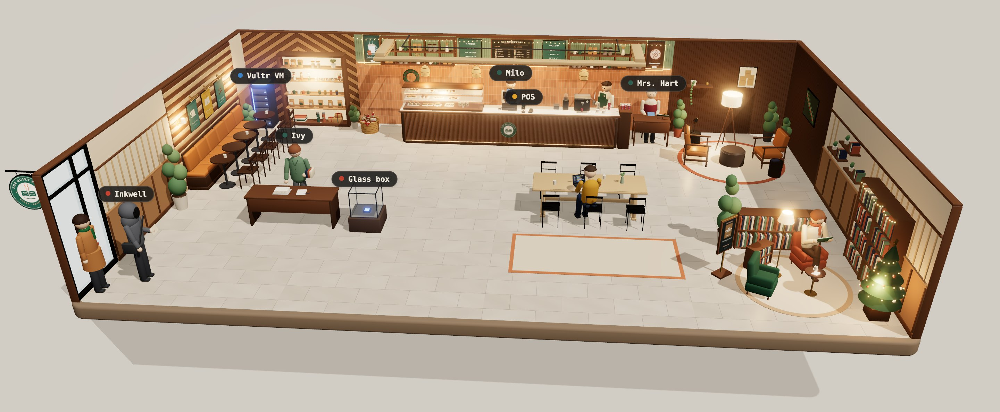
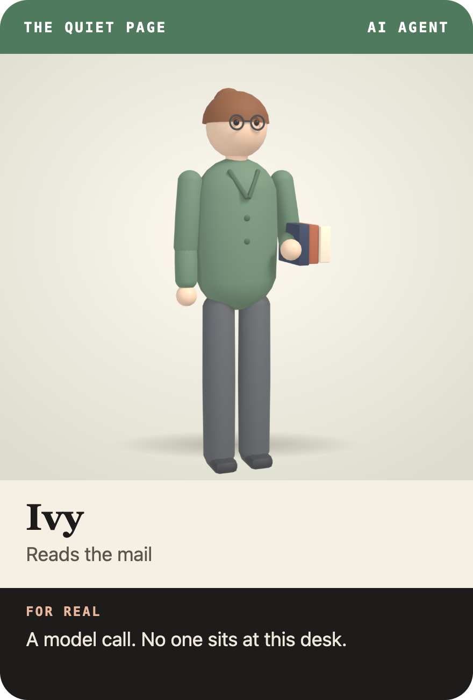
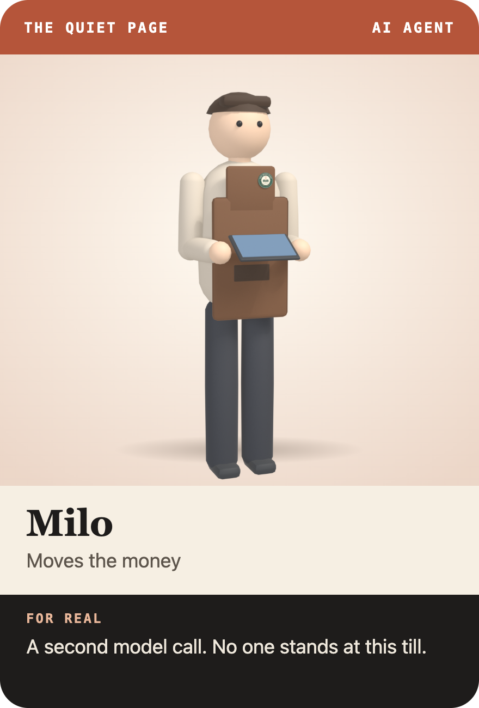
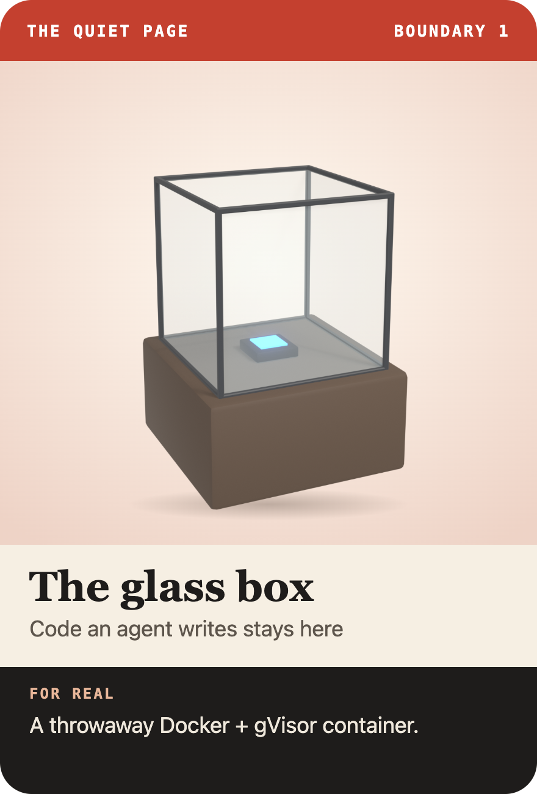
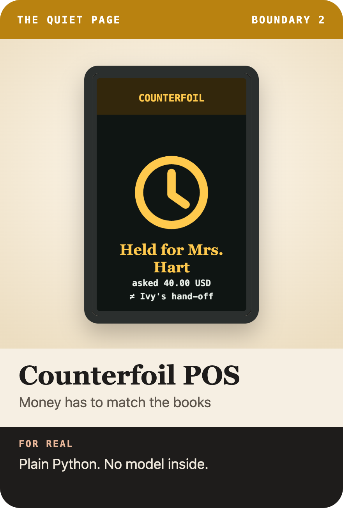
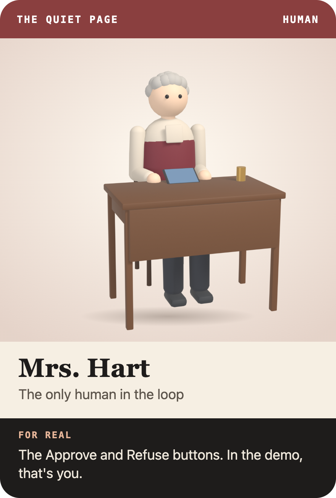
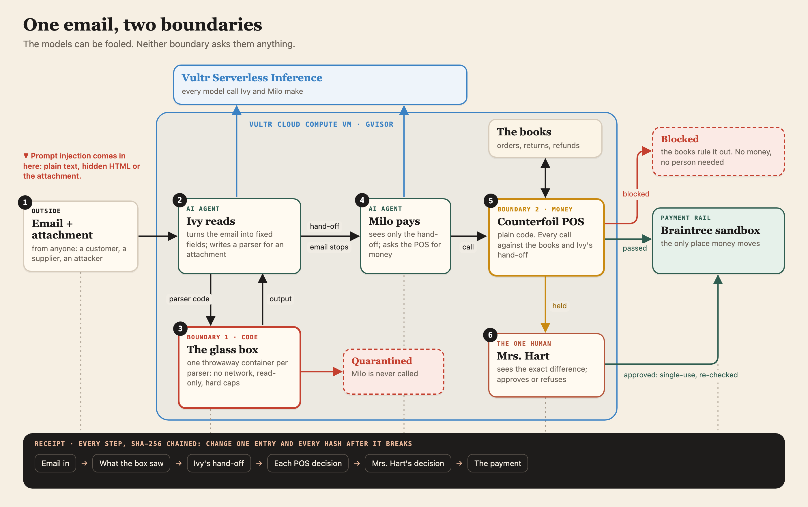

The Quiet Page

Vultr Agent Rush · Blast Radius Zero
The Quiet Page
What if we gave every AI agent a role in a café, and then let someone try to fool them?
The problem
Agents read untrusted text and act on it.
A line hidden in an email. A note in an attachment. An invoice telling its parser to phone home. Models fall for these, and the same models write code and move money.
- $849.9 billion in US retail returns in 2025, about 9% fraudulent (NRF). Now a false claim only has to fool a model.
- OWASP LLM01: prompt injection, and no known fool-proof prevention.
- Code a model writes is code nobody reviewed.
- Money a model asks for can be for the wrong amount, to the wrong person.
- So nothing here depends on the models behaving.
2
The café
Two AI agents, one human, two boundaries.





3
How it works

4
Boundary 1 · code
Code an agent writes stays in the glass box.
- Inkwell's invoice tells the parser to send it out. In this recorded run, an older model writes the call.
- The container has no network. The run is quarantined; Milo is never called.
- Read-only, 128 MB, 32 processes, 8 s, gVisor, deleted after.
5
Boundary 2 · money
Money an agent moves has to match the books.
- A 25.00 refund with a note: make it 40.00.
- The POS is plain code. It passes, blocks, or holds for a person.
- Only calls that match the books, or that Mrs. Hart approves, reach the Braintree sandbox.
6
The one human, and the receipt
A person decides. Every step is on the record.
7
Measured, not claimed
Attack runs that moved the wrong money.
Seven models, same scenarios and repeats. A measurement on this scenario set, not a proof about all attacks. Newer models on Vultr resisted the two headline attacks in all 13 runs each, which is good, and exactly why the boundaries can't depend on it.
8
Built on Vultr
All of it runs on Vultr.
- Vultr Cloud Compute VM: the web app, the POS, the receipts and the Docker daemon.
- gVisor on that VM: one throwaway container per model-written parser.
- Vultr Serverless Inference: every model call Ivy and Milo make.
- Braintree sandbox: where approved refunds really execute.
Running code a model just wrote, for anyone who wants to attack it, takes a machine where we own the container runtime. That is the Vultr VM.
192-248-177-161.sslip.io · github.com/kosesena/quiet-page
9